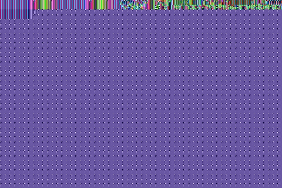
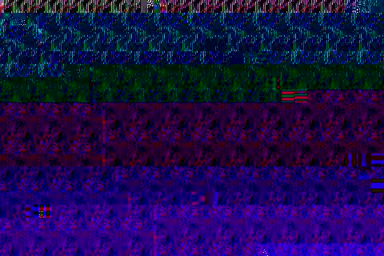
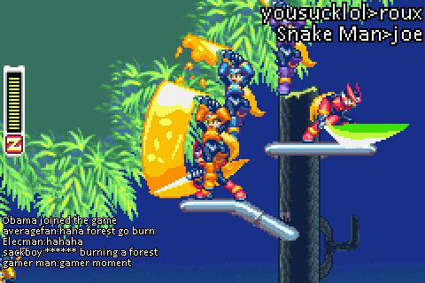
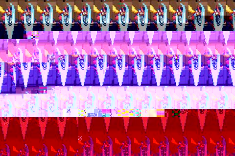

|

For the first time ever, experience Megaman Zero with your friends!(or foes) |

Choose between an array of 6 different classes, each with their unique abilities! |
|

Write your own Megaman Zero story with the community! |

Explore a wide variety of locations from all the 4 games! |
The above screenshots aren't from the current game. They are mockups of what the final game could look like.
(not affiliated with Capcom and/or Inti Creates in any way. All credit goes to Capcom and Inti Creates for resources and IP used in the project.